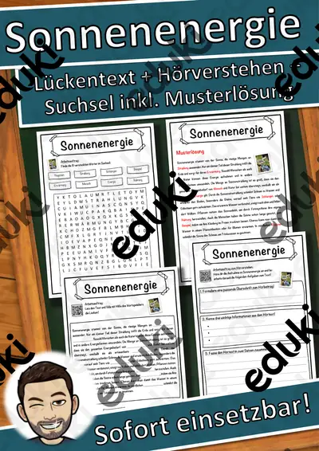

Energie, Rohstoffe und Umwelt: Arbeitsblätter für Klasse 4–10 (Erdkunde)
Energie, Rohstoffe und Umweltschutz verbinden Erdkunde, Physik und Politik. Die Lernenden vergleichen Energieformen und bewerten Folgen.
Im Unterricht begegnen den Lernenden zuerst Erneuerbare Energie und Kohle und Erdöl. Wer weitergeht, behandelt Windkraft, Solarenergie, Recycling sowie Umweltschutz.
Wo genau im Lehrplan das Thema steht, unterscheidet sich von Land zu Land, häufig im Fach Erdkunde in den Klassen 4 bis 10. Gemeinsames Ziel: die Schülerinnen und Schüler vergleichen Energiequellen und begründen Handlungsmöglichkeiten.
Eine Reihe zu Energie, Rohstoffe und Umwelt lässt sich so gliedern: erst Erneuerbare Energie erarbeiten, dann Kohle und Erdöl anwenden, später Solarenergie und Recycling vertiefen. Zu jedem Material gehört eine Musterlösung, die Korrektur und Selbstkontrolle erleichtert. Leistungsstarke und schwächere Lesende erhalten über die Lesespurgeschichten Texte in drei Stufen.
Zum Thema finden Sie 17 Materialien, unter anderem Nachhaltig schenken, Skulptur und Plastik und Der Umweltschutz, verteilt auf 3 Lesespurgeschichten, 3 Prüfungstrainings und 11 Lückentexte mit Hörverstehen in Klasse 5–9. Ein Energie-Check im Schulgebäude liefert eigene Daten, die zur Diskussion anregen.
Das gehört zum Thema
Passende Arbeitsblätter und Materialpakete

Nachhaltig schenken – Zeit, Selbstgemachtes und Verpackung ohne Müll – Lesespurgeschichte mit Rätselaufgaben (Klasse 6)

Skulptur und Plastik – Kunst zum Umrunden – Lesespurgeschichte mit Rätselaufgaben (Klasse 6)

Die Windkraft – Lesespurgeschichte mit Rätselaufgaben (Klasse 8)

Der Umweltschutz – Prüfungstraining Biologie (Klasse 8)

Rohstoffe und Energie – Prüfungstraining Erdkunde (Klasse 9)

Energie und Arbeit – Prüfungstraining Physik (Klasse 9)

Sonnenenergie Lückentext mit Wortspeicher Hörverstehen und Suchsel

Windkraft Lückentext mit Wortspeicher Hörverstehen und Suchsel

Wasserkraft Lückentext mit Wortspeicher Hörverstehen und Suchsel

Umweltschutz Lückentext mit Wortspeicher Hörverstehen und Suchsel

Rohstoff Lückentext mit Wortspeicher Hörverstehen und Suchsel

Recycling Lückentext mit Wortspeicher Hörverstehen und Suchsel

Erneuerbare Energie Lückentext mit Wortspeicher Hörverstehen und Suchsel

Energie Lückentext mit Wortspeicher Hörverstehen und Suchsel

Erdöl Lückentext mit Wortspeicher Hörverstehen und Suchsel

Erdgas Lückentext mit Wortspeicher Hörverstehen und Suchsel

Kohle Lückentext mit Wortspeicher Hörverstehen und Suchsel
Häufige Fragen
Für welche Klassenstufe passen die Arbeitsblätter zu Energie, Rohstoffe und Umwelt?
Der Schwerpunkt liegt auf Klasse 6; insgesamt deckt die Auswahl (17 Titel) Klasse 5–9 ab. In der Beschreibung jedes Materials steht die empfohlene Stufe.
Welche Inhalte decken die Materialien zu Energie, Rohstoffe und Umwelt ab?
Die Materialien arbeiten an Erneuerbare Energie, Kohle und Erdöl und Windkraft und gehen dann weiter zu Solarenergie, Recycling und Umweltschutz. Vorab lohnt ein Blick in den Lehrplan des eigenen Bundeslandes.
Wie setze ich Energie, Rohstoffe und Umwelt im Unterricht ein?
Beginnen Sie mit einem Einstieg zu Erneuerbare Energie und ergänzen Sie nach Bedarf. Ein Energie-Check im Schulgebäude liefert eigene Daten, die zur Diskussion anregen.
Mehr Material nach Fach und Klasse
- Alle Materialien Biologie
- Arbeitsblätter Biologie Klasse 4
- Arbeitsblätter Biologie Klasse 5
- Arbeitsblätter Biologie Klasse 6
- Arbeitsblätter Biologie Klasse 7
- Arbeitsblätter Biologie Klasse 8
- Arbeitsblätter Biologie Klasse 9
- Arbeitsblätter Biologie Klasse 10
- Unterrichtsmaterial Klasse 4
- Unterrichtsmaterial Klasse 5
- Unterrichtsmaterial Klasse 6
- Unterrichtsmaterial Klasse 7
- Unterrichtsmaterial Klasse 8
- Unterrichtsmaterial Klasse 9
- Unterrichtsmaterial Klasse 10
Verwandte Lehrplanthemen
- Bundesländer und Landeshauptstädte (Erdkunde, Klasse 3–7)
- Erdbeben und Vulkane (Erdkunde, Klasse 5–9)
- Rhein, Donau und die großen Flüsse (Erdkunde, Klasse 4–8)
- Alpen und Gebirge (Erdkunde, Klasse 4–8)
- Heimat, Region und Bundesländer-Vergleich (Erdkunde, Klasse 3–8)